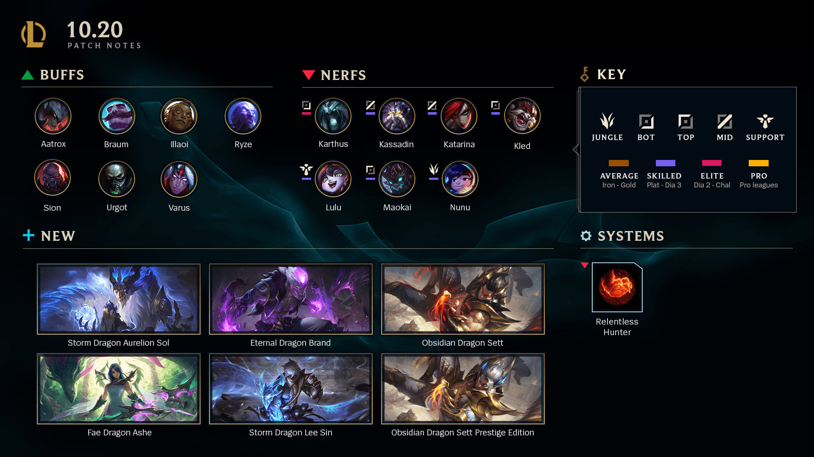
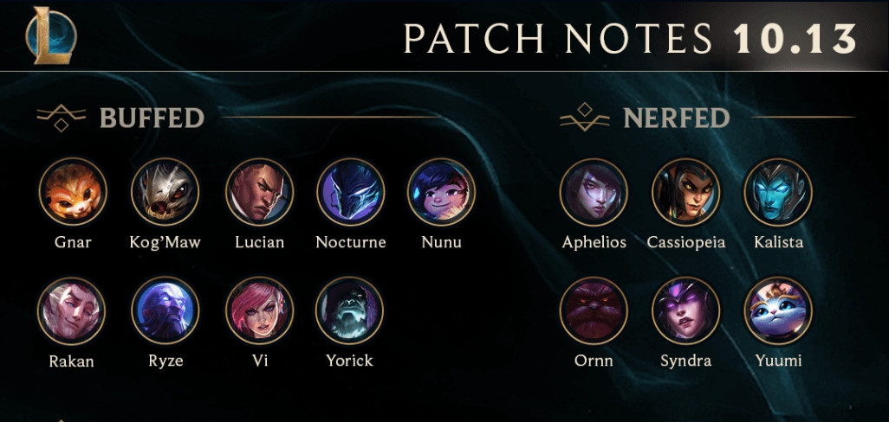
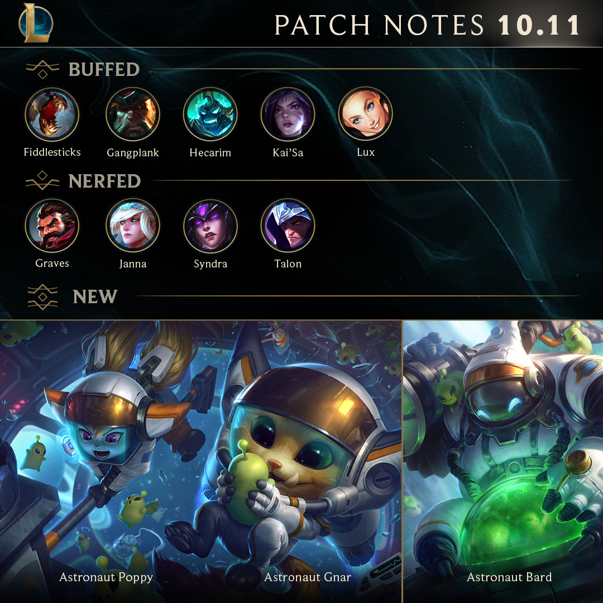
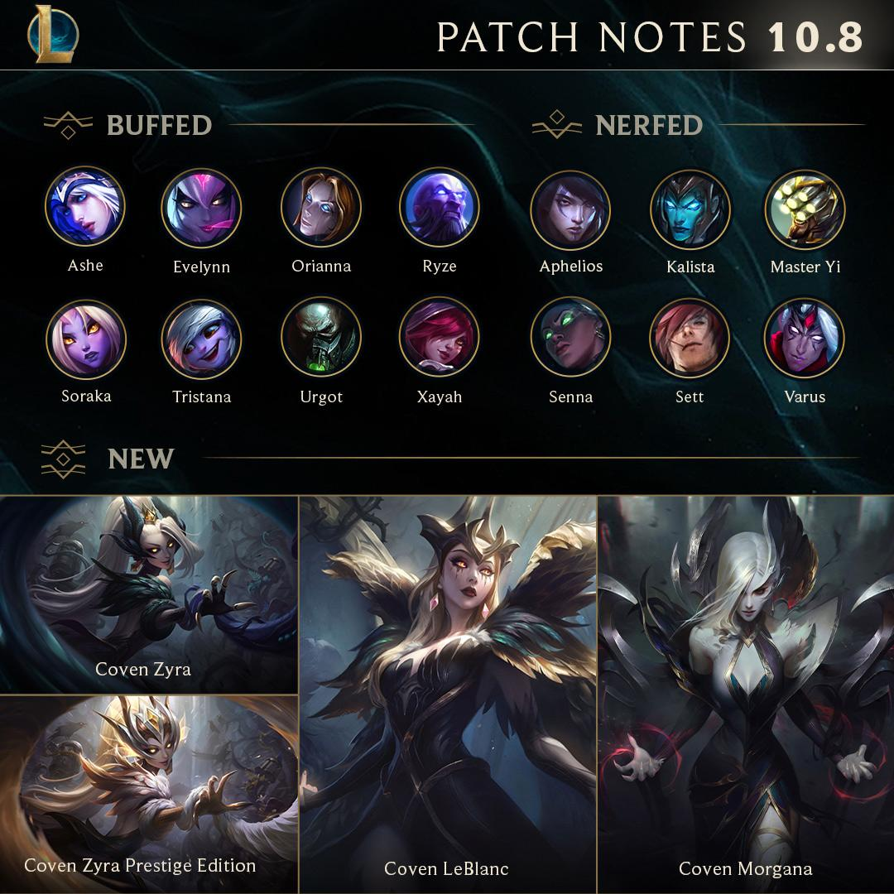
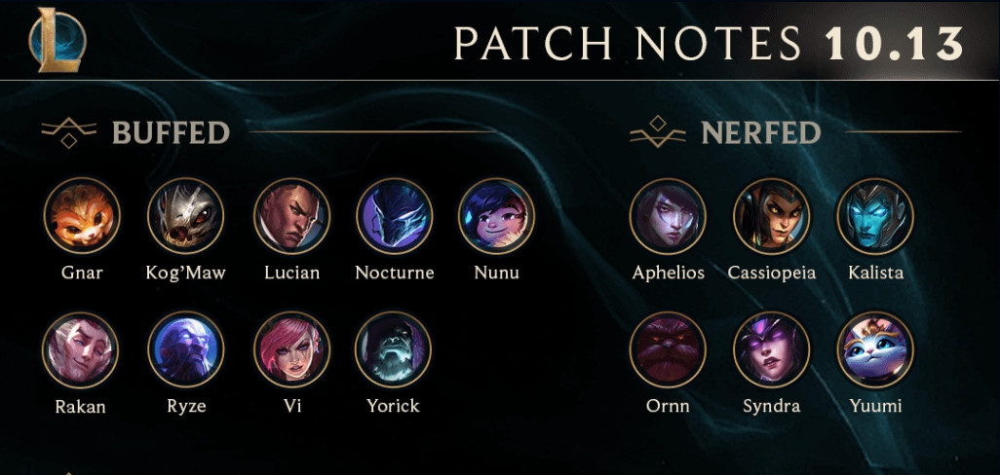
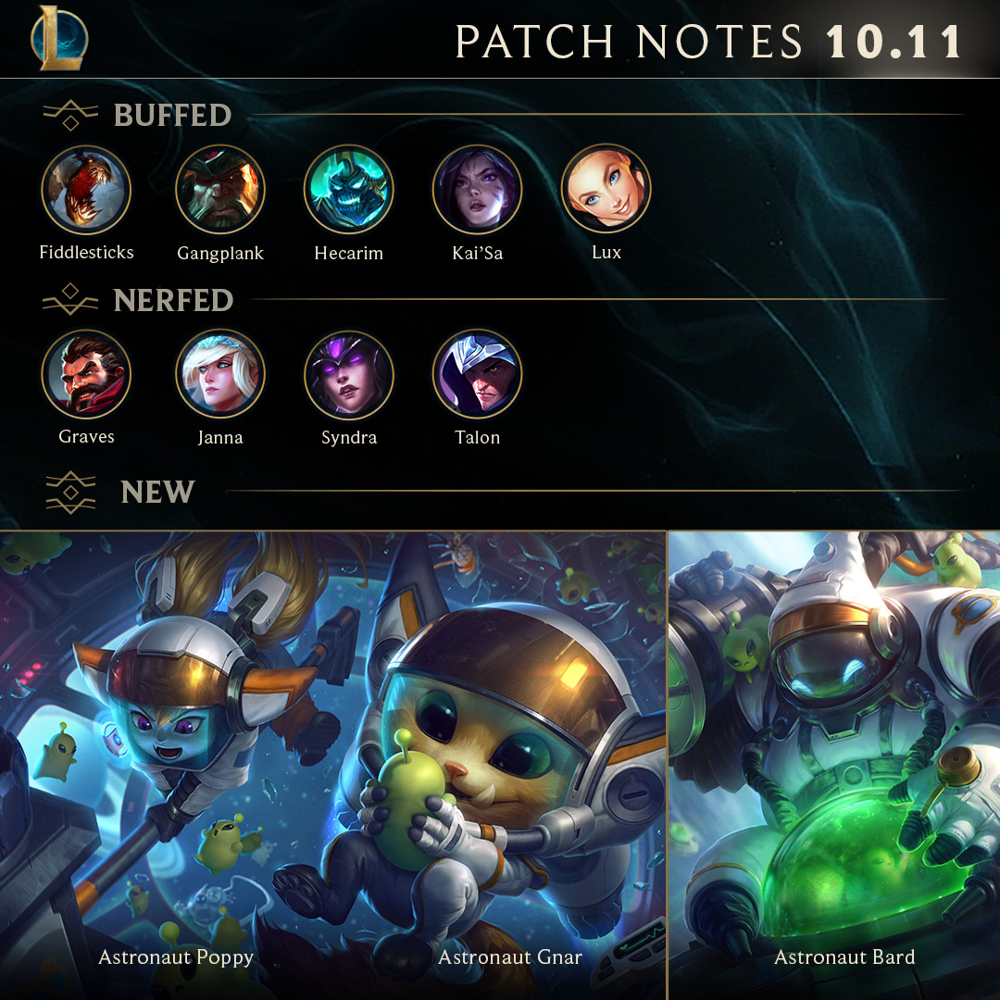
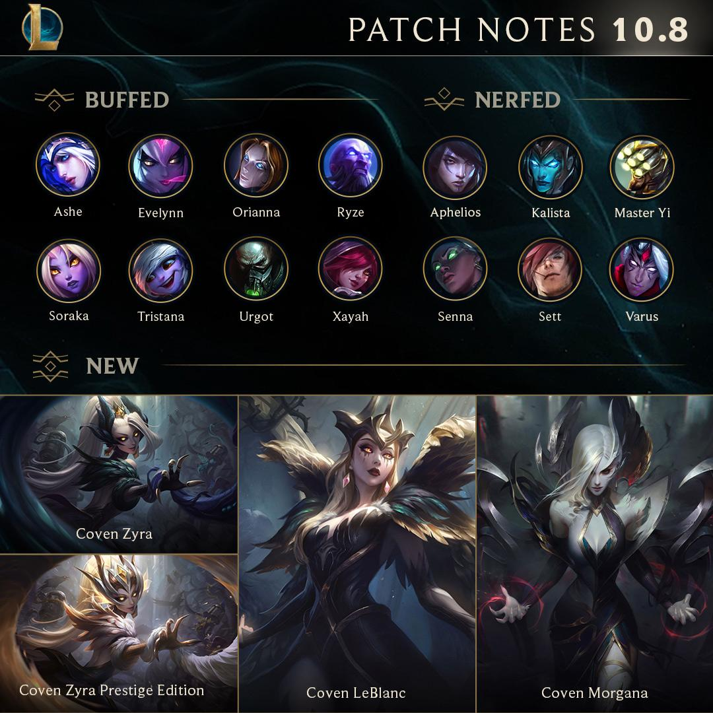

Patch Notes





Buffs and Nerfs for Patch 10.20.
In Patch 10.20. release of Dragon skin line, buffs to Atrox, Illaoi, Urgot, Braum More ...

Buffs and Nerfs for Patch 10.13.
Patch 10.13. release of Pool party skins. Buffs & nerfs to Vi, Nunu, Ornn More ...
Buffs and Nerfs for Patch 10.12.
Focus of Patch 10.12. was in balancing Runes, Summoner Spells & Bugfixes. More ...

Buffs and Nerfs for Patch 10.11.
Patch 10.11. has a focus on Marksmans - Balancing items, hp, and solo laning. More ...

Buffs and Nerfs for Patch 10.8.
Patch Notes 10.8. brings us Coven skin line, bugfixes and changes to champions ability timers. More ...